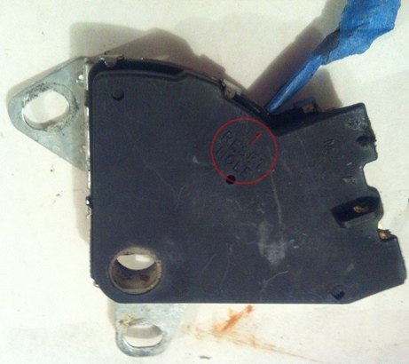

Go Home
Site Map
Go Home
Site Map
Neutral safety switch needs replace or is misadjusted?
Neutral Safety and Backup Lamp Switch
- Place transmission shaft in "NEUTRAL" position.
- Align flats in switch insert with flats on transmission shaft and push switch over shaft.
- Loosely assemble bolts to transmission case.
- Insert 2.34 diameter gage pin (or rounded shank end of a 3/32 inch drill bit) into service adjustment hole. (Reset Hole in image below.) Rotate the switch until the gage pin drops to a depth of 9mm.
- Tighten attaching bolts to recommended torque.
- Remove gage pin.
(Source above: 88 Service manual, page 7A1-9)
RWDPLZ said in in this thread: I used the exact size drill bit, put it in the slot, and used a piece of tape to be able to tell when it was in all the way on the new switch.
